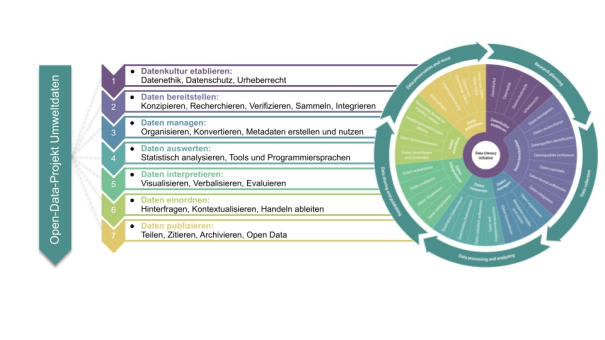
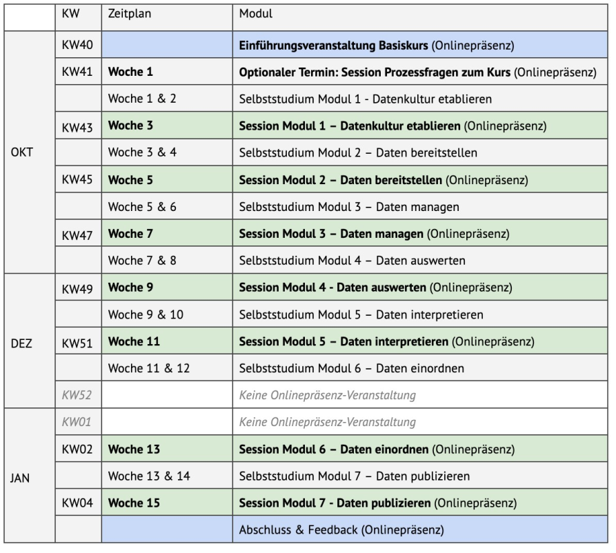
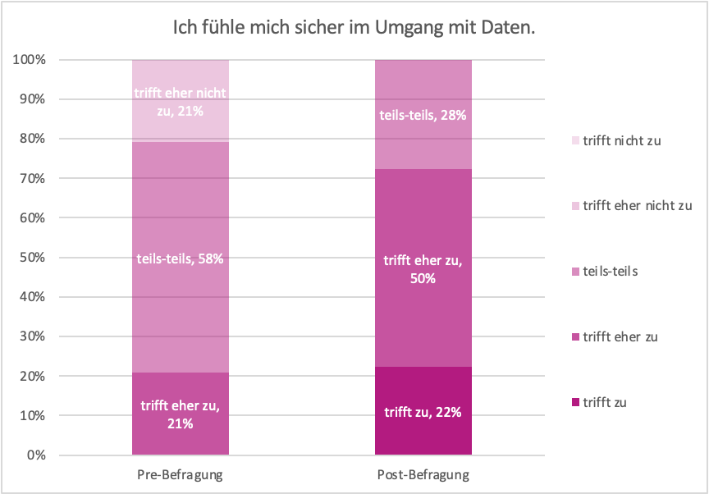

DaLI-Basiskurs mit Open-Data-Projekt
Ein interdisziplinärer Flipped-Classroom-Kurs zum Erwerb grundlegender Datenkompetenzen
Toolbeschreibung
Der DaLI Basiskurs gibt einen Einblick in das gesamte Spektrum von Data Literacy und ermöglicht die Entwicklung grundlegender Datenkompetenzen für Studierende aller Fachrichtungen. Das Konzept des Basiskurses basiert auf dem DaLI-Kompetenzrahmen, der sich neben dem Data-Literacy-Modell von Ridsdale et al. (2015) und dem Datenkompetenz-Framework von Schüller et al. (2019) an dem Forschungsdatenlebenszyklus orientiert. Das Angebot ist für die Dauer eines Semesters mit einem Flipped-Classroom-Ansatz (Jäckel, 2021) konzipiert. Die Bereitstellung der Inhalte für das Selbststudium erfolgt im von der DaLI / der TH Köln entwickelten KI-Campus-Kurs „Data Literacy – Basiskurs Data Lifecycle” , der unter anderem auch Jupyter Notebooks für die Ausführung von Python-Code bereitstellt.
Studierende wenden die erworbenen Kenntnisse in der Bearbeitung einer Projektaufgabe aus dem durchgehenden, begleitenden Open-Data-Projekt an. In anschließenden Onlinepräsenzterminen erfolgt die Vertiefung der Inhalte mit aktivierenden Lehrmethoden, die einen Dialog zu aktuellen Fragestellungen im Umgang mit Daten fördern.
Beim Erwerb von Datenkompetenzen sind neben technischen auch ethische und datenschutzrechtliche Fähigkeiten für alle Studierenden erstrebenswert. Der Data-Literacy-Basiskurs adressiert dies mit einem durchgehenden Fokus auf Fragestellungen der Datenkultur und ist als inter- und transdisziplinäres Format angeboten (vgl. Schüller et al., 2021). Im DaLI-Basiskurs kommen Studierende aller Fachrichtungen ab dem ersten Semester in einer Social-Learning-Umgebung zusammen, in der sie im Sinne des Peer-Learnings (vgl. Boud et al., 2001) Beiträge erstellen, kommentieren und dabei reflektieren. Die Onlinepräsenztermine werden zudem von Lehrenden aus verschiedenen Fakultäten durchgeführt, sodass Studierenden ein Austausch mit Perspektiven aus diversen Fachrichtungen ermöglicht wird und ethische und datenschutzrechtliche Aspekte zu den jeweiligen Anwendungen diskutiert werden können.
Im begleitenden Open-Data-Projekt lernen die Studierenden entlang des Forschungsdatenzyklus relevante Prozessschritte im sensiblen Umgang mit Umweltdaten kennen und setzen diese praktisch um. Dieses beinhaltet die grundsätzliche Prozessierung und Analyse der Daten, die zur Beantwortung wissenschaftlicher Fragestellungen führen sollen. Hierbei werden die Fähigkeiten angewendet, die in der Selbstlernphase des Flipped Classrooms eigenständig erworben wurden. Die Analyse beinhaltet die Erhebung von wichtigen Kennzahlen und Visualisierungen sowie die Durchführung statistischer Auswertung. Die daraus gewonnenen Ergebnisse werden anschließend kontextualisiert, kritisch hinterfragt und eingeordnet. Am Ende haben die Teilnehmenden einen Einblick in den gesamten Prozess der Datennutzung sowie in konkrete Fragestellungen der datenbasierten Entscheidungsfindung erlangt und dabei wichtige Fähigkeiten im Umgang mit Daten erworben, angewandt und vertieft.
Voraussetzungen & Zielgruppen
Der Data-Literacy-Basiskurs richtet sich an Studierende aller Fachrichtungen und Semester. Vorkenntnisse sind nicht erforderlich.
Kompetenzen
Der Basiskurs umfasst alle Bereiche des DaLI-Kompetenzrahmens, das heißt neben dem übergeordneten Thema der Datenkultur elementare Aspekte der Kompetenzbereiche Datenbereitstellung, Datenmanagement, Datenauswertung sowie der Interpretation, Einordnung und Publikation von Daten (siehe Abbildung 1). Die Modulinhalte wurden in einem interdisziplinären Team von Lehrenden aus sieben Fakultäten entwickelt.
Für den Basiskurs ist folgendes Learning Outcome formuliert:
Die Studierenden können die relevanten Prozessschritte im sensiblen Umgang mit Daten innerhalb des (Forschungs-)Datenzyklus erklären und teilweise auf ein Open-Data-Praxisprojekt anwenden, indem sie
- relevante Richtlinien, Regeln und Kriterien für Datenschutz und Datensicherheit beschreiben,
- einen Datensatz bezogen auf eine vorgegebene Forschungsfrage und vorgegebene Hypothese erstellen,
- vorgegebene tabellarische Datensätze mithilfe geeigneter Werkzeuge automatisiert einlesen,
- die in einem Datensatz vorliegenden Arten von Daten beschreiben und zusammenführen,
- grundlegende statistische Methoden und Analyseverfahren auf vorgegebene Daten anwenden,
- einfache Visualisierungen von Daten erzeugen, diese kriteriengeleitet erläutern und deren Interpretation einschätzen,
- die Ergebnisqualität vorgegebener Daten hinterfragen,
- den nachhaltigen Umgang mit Daten, deren Publikation, Langzeitarchivierung und Nachnutzung beschreiben,
um Daten und Datensätze im beruflichen Umfeld mit einem sensibleren und professionelleren Blick einzuschätzen und um in weiteren Modulen Aspekte im Umgang mit Daten gezielt vertiefen zu können.

Lerninhalte & Methoden
Der Data-Literacy-Basiskurs wird mit einem Flipped-Classroom-Ansatz durchgeführt. Onlinepräsenztermine und E-Learning-Phasen im Selbststudium wechseln sich ab. Einen beispielhaften Ablauf zeigt Abbildung 2. Studierende erarbeiten zunächst eigenständig die Themen des jeweiligen Moduls. Die Selbstlernmaterialien werden über die digitale Lernplattform KI-Campus in dem von der TH Köln erstellten Kurs „Data Literacy – Basiskurs Data Lifecycle” bereitgestellt. Dieser bietet verschiedene Programmierübungen an, die in einer integrierten Jupyter-Notebook-Umgebung durchgeführt werden können. Darauf aufbauend erfolgt die durchgehende Bearbeitung eines Open-Data-Projekts in Kleinstgruppen beziehungsweise individuell. Hierbei werden Umweltdaten zur Feinstaubbelastung und Wettermessungen aus unterschiedlichen Quellen kombiniert. Die Einreichung der Projektaufgaben geschieht in einem Social-Learning-Environment1 , den THspaces. Der Austausch nach jeder Projektaufgabe wird im Peer-Learning durchgeführt, bei dem sich die Teilnehmenden gegenseitig Feedback zu Einreichungen geben: Die Studierenden müssen nach der Einreichung ihrer Lösung zwei Beiträge der anderen Studierenden auf den THspaces kommentieren.
In den Onlinepräsenzterminen werden verschiedene aktivierende Lehrmethoden, wie beispielsweise Live-Coding2 , Think-pair-share3 oder Blitzlichtumfragen4, eingesetzt. Damit wird kontinuierlich Raum für Diskussion geschaffen, um im Dialog und Austausch die Themen der Datenkultur durchgehend zu adressieren.
An der inhaltlichen Modulentwicklung waren zehn Lehrende unterschiedlicher Fakultäten und Fachbereiche der Hochschule zentral beteiligt. Für einen kohärenten Kursaufbau war eine Koordinatorin zuständig, die kursbegleitend sowie in der Vor- und Nachbereitung durchgängig beteiligt war. Zur Qualitätskontrolle und als Grundlage für weitere Verbesserungen des Kurses wurde eine Evaluation auf Basis eines Prä-Post-Fragebogens durchgeführt.

Erkenntnisse & Erfahrungen
Im Prä-Post-Fragebogen der Evaluation5 zeigen erste Ergebnisse, dass die Studierenden nach der Teilnahme am Basiskurs ihre Datenkompetenzen selbst höher einschätzen als vorher. Der Anteil der Studierenden, die einschätzen, dass es auf sie zutrifft oder eher zutrifft, dass sie sich sicher im Umgang mit Daten fühlen, stieg von 21 Prozent auf 72 Prozent in der Post-Befragung (siehe Abbildung 3).

Die Heterogenität der Hintergründe und Vorkenntnisse der Studierenden stellt eine Herausforderung dar, die durch die individuelle Gestaltung der Selbstlernphase und gezielte Angebote mit Fragestunden, optionalen Aufgaben sowie das oben beschriebene Peer-Feedback (Boud et al., 2001) adressiert wurde. Gleichzeitig wurden die Interdisziplinarität und der Austausch zwischen Fachgebieten als Bereicherung wahrgenommen.
Hilfreiche Links
Data Literacy Initiative der TH Köln
Data Literacy-Basiskurs Data Lifecycle
Autor:innenprofile
Juliane Piecha ist Koordinatorin der Data-Literacy-Initiative (DaLI) der TH Köln. Die studierte Wirtschaftswissenschaftlerin hat als Consultant unter anderem bei der Independent Evaluation Group der Weltbank an quantitativen Evaluationsprojekten mitgewirkt und war dabei unter anderem für die Analyse und Integration von Daten im Bereich Governance verantwortlich.

Konrad U. Förstner ist Professor für Data and Information Literacy am Institut für Informationswissenschaft der TH Köln und leitet gleichzeitig bei ZB MED – Informationszentrum Lebenswissenschaften den Programmbereich Data Science and Services.
Elisabeth Kaliva ist Referentin für Blended Studies an der Fakultät für Kulturwissenschaften der TH Köln und als Leiterin des Digital Open Learning Labs (DOLL) für die Konzeption, Umsetzung und Erforschung von digitalen Lernszenarien zuständig.
Boris Naujoks ist Professor für angewandte Mathematik und CI-Methoden am Institut für Data Science, Engineering, and Analytics. Er forscht zu mehrkriteriellen Optimierverfahren und lehrt Grundlagenvorlesungen der Mathematik sowie Operations Research am Campus Gummersbach der TH Köln.
Simone Fühles-Ubach ist Professorin für Bibliotheksmanagement und Statistik am Institut für Informationswissenschaft der TH Köln und leitet derzeit den Studiengang „Bibliothek und digitale Kommunikation”. Daneben ist sie stellvertretende Vorsitzende des Hochschulrats.
Philipp Heidkamp ist Professor für Interface Design an der KISD / Fakultät für Kulturwissenschaften der TH Köln. Er leitet das Programm Master of European Design (MEDes) und ist Mitinitiator des DaLI-Projekts an der TH Köln.
Förderhinweise: Das hier vorgestellte Projekt wird durch das Ministerium für Kultur und Wissenschaft des Landes Nordrhein-Westfalen in Kooperation mit dem Stifterverband in dem Programm „Data Literacy Education.nrw“ gefördert.
Literatur
Fußnoten
In der Durchführung an der TH Köln wird die Kursumgebung in den THspaces eingerichtet, aber auch die Nutzung von Moodle, ILU oder anderer Learning-Management-Systeme (LMS) ist hier möglich.↩︎
Live-Coding ist ein interaktiver Prozess, bei dem Programmiercode in Echtzeit geschrieben, ausgeführt und manipuliert wird, sodass die Teilnehmenden das Programmieren schrittweise nachvollziehen können.↩︎
Die Think-pair-share-Methode ist ein Verfahren des kooperativen Lernens in drei Arbeitsschritten, in dem Teilnehmende eine Fragestellung zunächst alleine individuell bearbeiten (think), sich anschließend in Partnerarbeit austauschen (pair) und dann mit der Gesamtgruppe teilen (share), siehe https://www.bpb.de/lernen/angebote/grafstat/partizipation-vor-ort/155251/think-pair-share/.↩︎
Blitzlichtumfragen werden als eine Methode des Feedbacks angewandt, mit der zu einem klar eingegrenzten Thema kurze Statements und Reflexionen der Teilnehmenden eingeholt werden.↩︎
Der Prä-Fragebogen wurde von 24 Studierenden ausgefüllt. Rückmeldungen im Post-Fragebogen gaben 18 Studierende. Insgesamt nahmen 28 Studierende von Anfang bis Ende des Kurses teil.↩︎
Wiederverwendung
Zitat
@online{piecha,
author = {Piecha, Juliane and U. Förstner, Konrad and Kaliva,
Elisabeth and Naujoks, Boris and Fühles-Ubach, Simone and Heidkamp,
Philipp},
editor = {Koch, Henning and Sievers, Sam},
title = {datenkompetent - Beispielhafte Lehrformate und -strategien
für die Data Literacy Education an deutschen Hochschulen},
url = {https://Stifterverband.github.io/datenkompetent//posts/basiskurs_th_koeln/basis.html},
langid = {de}
}